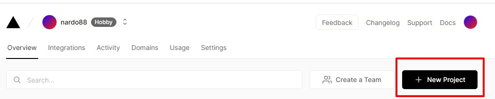
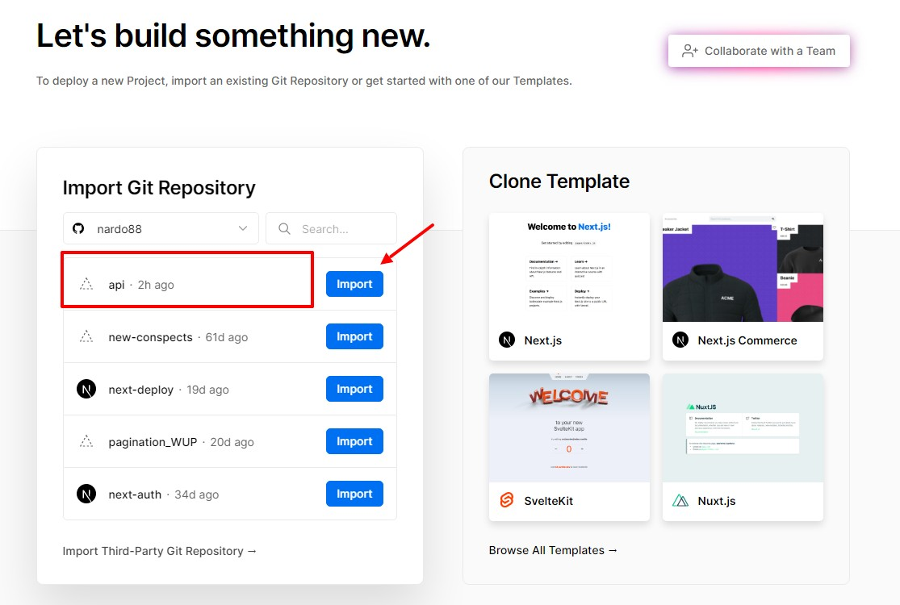
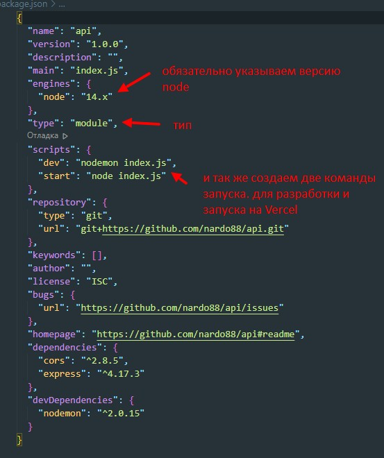
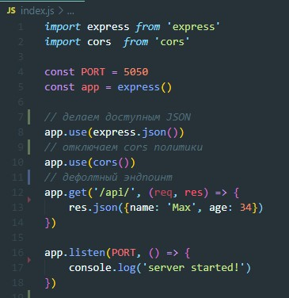
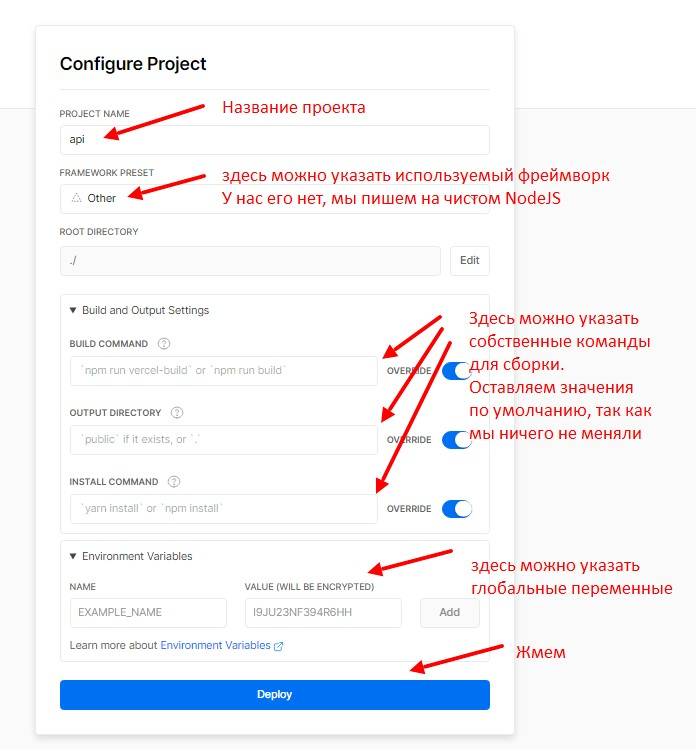
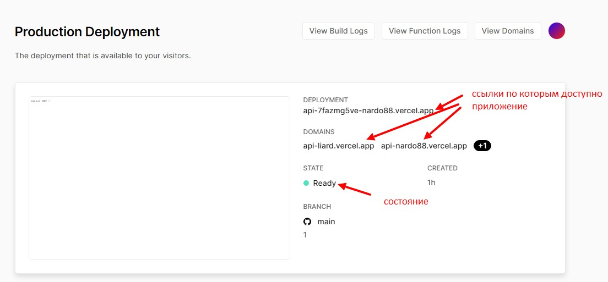
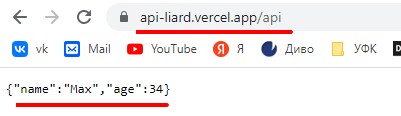
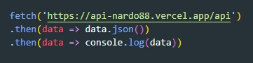
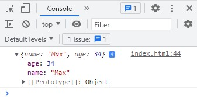

Переходим на сайт Vercel жмем на Login и авторизовываемся под учеткой github
После того как авторизовались и добавили свой гитхаб аккаунт в Vercel создаем новый проект
На следующей итерации выбираем проект из GitHub в котором написан у нас REST API
Здесь все как обычно, начинаем с иниуциализации проекта. npm init -y. Далее устанавливаем express, nodemon и cors (cors нужен для настройки CORS политик).
Вот как будет выглядеть package.json
Исполняемый файл, минимальная сборка
Последний момент, что бы все работало необходимо добавить в проект файл конфигурации Vercel. В корне проекта создаем файл vercel.json с вот таким содержимым

Ссылка на РЕПОЗИТОРИЙ с файлом Vercel
После выбора репозитория, откроется вот такая страница
Жмем Deploy и если все хорошо получаем вот такую страницу
В нашем проекте дефолтный ендпоинт был с добавлением в URL api поэтому переходим по полученной ссылке и добавляем слеш api
Теперь к нашей API можно случаться например используя fetch
 Для отображений изменений в Vercel совершенно не нужно ничего делать. Просто пушим в master ветку изменения и Deploy будет выполнен автоматически.